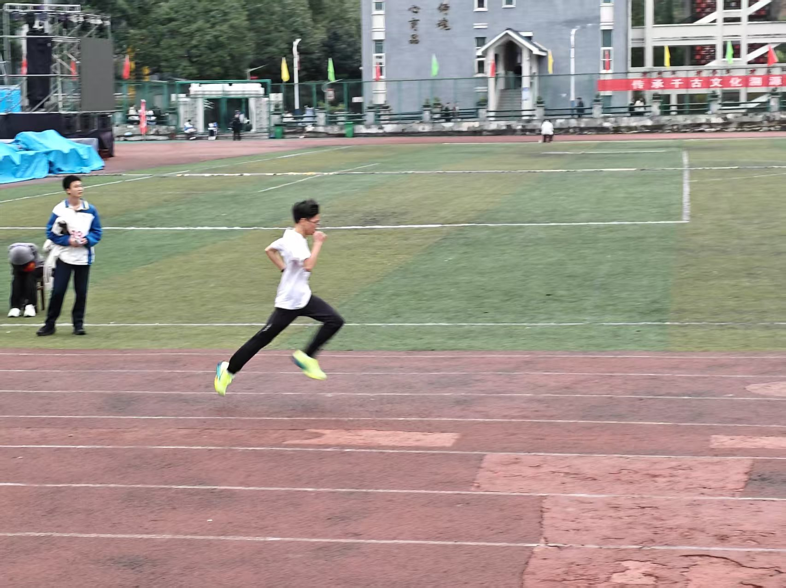
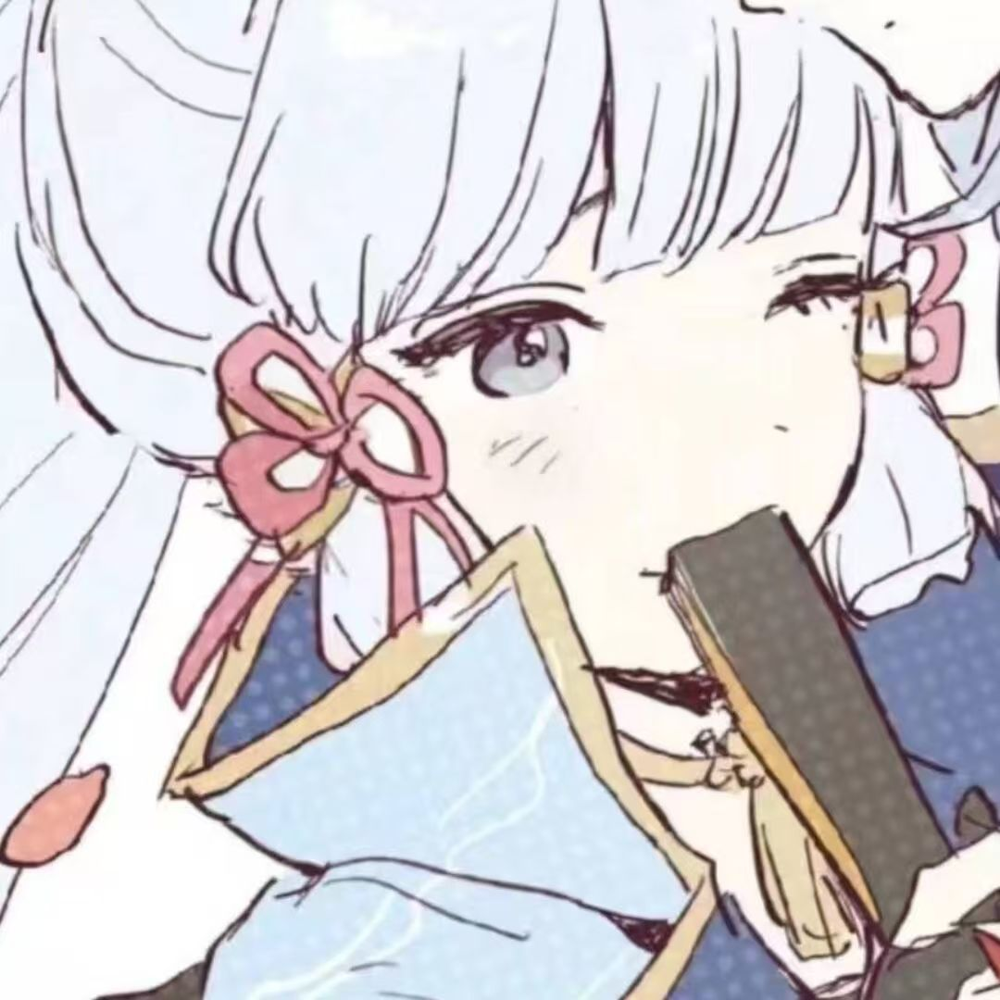
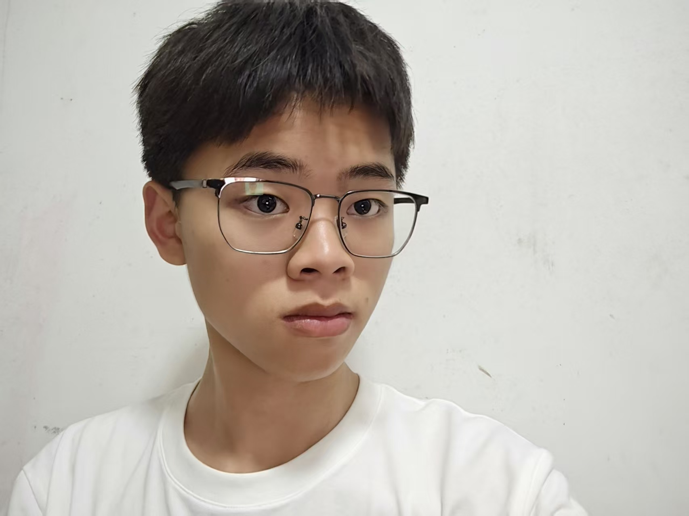
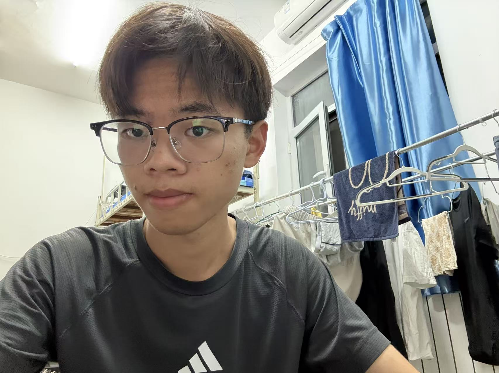
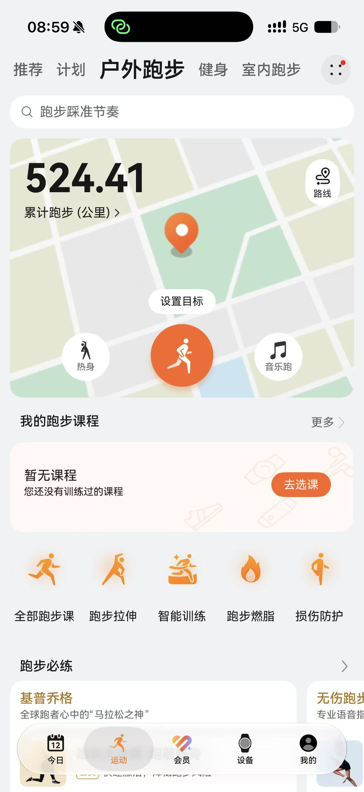
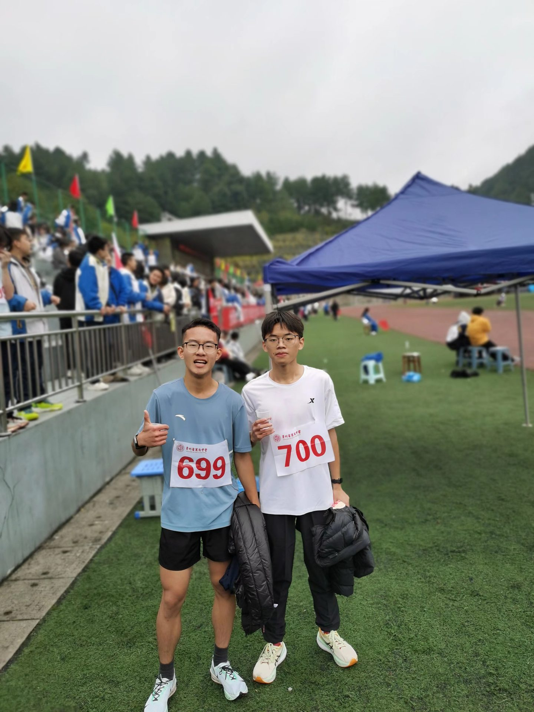
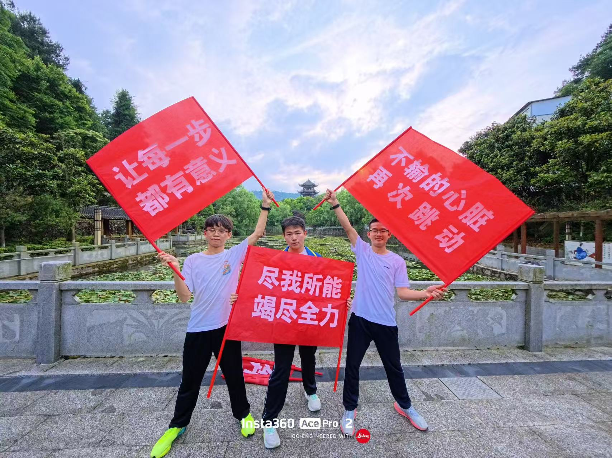
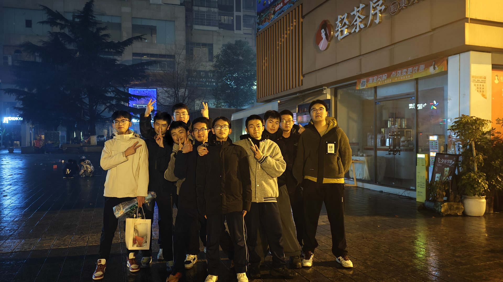
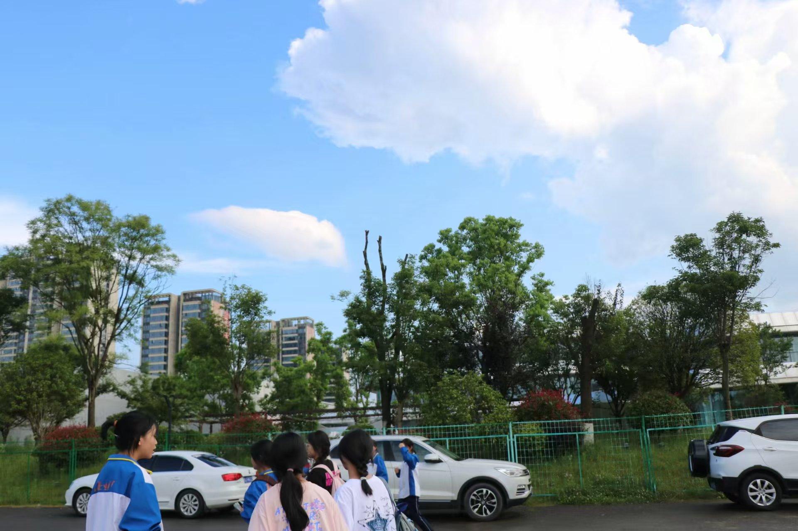
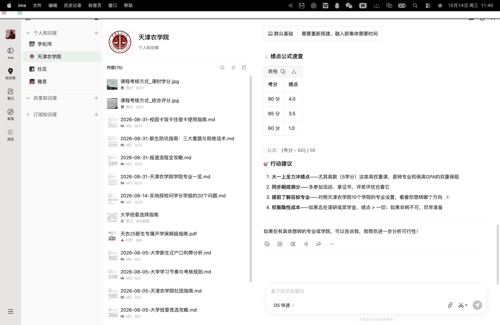

01 / INDIVIDUAL800 m
一个人的赛道，全力以赴。
参加 2025 年秋季运动会男子甲组 800 米项目，获得第七名。从赛前训练到正式上场，每一次起跑、节奏调整和冲刺，都是对耐力、专注与执行力的检验。
HELLO, I'M SONGHONG / 2026
认真学习，
也把热爱做成作品。
天津农学院 · 功能材料本科生
探索 AI 创作与编程，在持续奔跑中积累成长。


学习之外，PORTFOLIO
从网页小游戏到影像与 AI 短剧，这是我的实践记录。
WEB GAME
可直接体验的小游戏与网页创作记录
VIDEO WORKS
校园活动记录与个人短视频作品
HONORS & CERTIFICATES
人工智能训练师证书与校园体育荣誉
01 · ABOUT ME
功能材料本科生 · AI 工具学习者 · 跑步爱好者
2026 年，我进入天津农学院学习功能材料。在专业学习之外，我用 AI 工具与 Python 探索创作和编程，把新想法一点点变成可体验的作品。
跑步教会我长期坚持，志愿服务和校园活动让我更重视协作、执行与责任。
SPORTS PRACTICE / 体育实践
三年跑步，一次次出发。记录个人的突破，也珍藏与同伴并肩的时刻。
MY RUNNING STORY
操场上的一圈又一圈，让我逐渐从犹豫走向坚定。三年里，跑步改变了我的状态，也让我拥有面对新挑战的勇气。
800 米，是和自己的节奏较量；4×400 米接力，是为同一个终点共同努力。中长跑与足球，让运动成为我的校园生活中持续的一部分。
参加 2025 年秋季运动会男子甲组 800 米项目，获得第七名。从赛前训练到正式上场，每一次起跑、节奏调整和冲刺，都是对耐力、专注与执行力的检验。
代表班级参加男子甲组 4×400 米接力项目，获得团体第五名。个人的努力汇入班级的共同目标，成绩之外，更珍贵的是一起参赛、互相加油的集体记忆。
GROWTH / 看得见的改变
照片记录状态，公里数记录脚步。


三年里，一圈又一圈的训练，让我从犹豫走向坚定。跑步改变了我的状态，也让我学会把远处的目标，拆成脚下的每一步。

中长跑让我学会与长期目标相处：先迈出眼前的一步，再让每一次努力慢慢累积。
接力与足球让我看到，个人表现之外，还有沟通、配合和共同承担的责任。
运动会上的呐喊、同学的陪伴、校园里的日常，都是继续向前的动力。
CAMPUS MEMORIES / 运动与同伴
点击照片，查看完整画面。

男子 800 米 · 参赛合影

校运会 · 班级加油旗

校园生活 · 班级同学合影

课余时光 · 校园记录
EXPERIENCE
从志愿服务到校园实践，持续积累可靠的执行与协作能力。
PROJECTS
把工具学习转化为可复用的专业能力。
CAPABILITIES
当前能力标签与持续学习方向。

AI IN PRACTICE / 技能展示
使用 ima 按主题搭建个人知识库，分类保存大学学习与校园事务资料，再通过知识库问答梳理要点，让 AI 工具融入日常学习。
集中保存文档、图片、PDF 与学习笔记。
按学校、学习与生活等主题组织资料。
围绕已有资料提问，提炼要点与行动思路。
EDUCATION & CREDENTIALS
NEXT CHAPTER
我正在积累功能材料、AI 工具、Python、沟通协作与持续执行的能力。跑步让我相信长期主义，而未来的每一步，我希望带着好奇、认真和行动力继续向前。